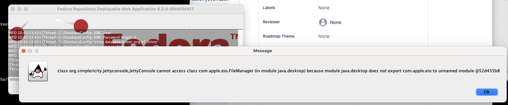

one-click functionality removed in https://fedora-repository.atlassian.net/jira/software/c/projects/FCREPO/issues/FCREPO-3923
FCREPO-3855 One-click is displaying errors when running on java 19
| Type | Story |
|---|---|
| Status | Closed |
| Resolution | Won't Do |
| Priority | High |
| Reporter | Danny Bernstein |
| Assignee | Dan Field |
| Created | 2022-10-17 17:35 UTC |
| Updated | 2024-09-02 12:19 UTC |
| Resolved | 2024-07-24 14:41 UTC |
| Components | core |
| Affects versions | Fedora 6.2.0 |
Environment
OSX Monterey, Java 19Description
When I download[ 6.2.0 of the releases page|https://github.com/fcrepo/fcrepo/releases/download/fcrepo-6.2.0/fcrepo-webapp-6.2.0-jetty-console.jar] and run the following with java 19, I’m getting the following error in the stack trace
$ java -jar ~/Downloads/fcrepo-webapp-6.2.0-jetty-console.jar Exception in thread "main" java.lang.RuntimeException: java.lang.reflect.InvocationTargetException at org.simplericity.jettyconsole.JettyConsoleBootstrapMainClass.startJettyConsole(JettyConsoleBootstrapMainClass.java:229) at org.simplericity.jettyconsole.JettyConsoleBootstrapMainClass.run(JettyConsoleBootstrapMainClass.java:123) at org.simplericity.jettyconsole.JettyConsoleBootstrapMainClass.main(JettyConsoleBootstrapMainClass.java:94) Caused by: java.lang.reflect.InvocationTargetException at java.base/jdk.internal.reflect.DirectMethodHandleAccessor.invoke(DirectMethodHandleAccessor.java:119) at java.base/java.lang.reflect.Method.invoke(Method.java:578) at org.simplericity.jettyconsole.JettyConsoleBootstrapMainClass.startJettyConsole(JettyConsoleBootstrapMainClass.java:227) ... 2 more Caused by: java.lang.RuntimeException: java.lang.IllegalAccessException: class org.simplericity.macify.eawt.DefaultApplication cannot access class com.apple.eawt.Application (in module java.desktop) because module java.desktop does not export com.apple.eawt to unnamed module @52d455b8 at org.simplericity.macify.eawt.DefaultApplication.<init>(DefaultApplication.java:69) at org.simplericity.jettyconsole.JettyConsoleStarter.initAppleExtensions(JettyConsoleStarter.java:209) at org.simplericity.jettyconsole.JettyConsoleStarter.initSwingApp(JettyConsoleStarter.java:195) at org.simplericity.jettyconsole.JettyConsoleStarter.run(JettyConsoleStarter.java:160) at org.simplericity.jettyconsole.JettyConsoleStarter.main(JettyConsoleStarter.java:71) at java.base/jdk.internal.reflect.DirectMethodHandleAccessor.invoke(DirectMethodHandleAccessor.java:104) ... 4 more Caused by: java.lang.IllegalAccessException: class org.simplericity.macify.eawt.DefaultApplication cannot access class com.apple.eawt.Application (in module java.desktop) because module java.desktop does not export com.apple.eawt to unnamed module @52d455b8 at java.base/jdk.internal.reflect.Reflection.newIllegalAccessException(Reflection.java:420) at java.base/java.lang.reflect.AccessibleObject.checkAccess(AccessibleObject.java:709) at java.base/java.lang.reflect.Method.invoke(Method.java:569) at org.simplericity.macify.eawt.DefaultApplication.<init>(DefaultApplication.java:64) ... 9 more
The application actually runs successfully - seems to be a non-critical error. But when I start Fedora, I get the following popup:

If I press “Ok” the browser fails to launch. But I can still access Fedora HTML UI by opening a browser to http://localhost:8080/rest
I get the same results whether I download the pre-built artifact or built from source using open jdk 19.
BTW: Using the following java command line params fixes it.
java --add-opens java.desktop/com.apple.eio=ALL-UNNAMED --add-opens java.desktop/com.apple.eawt=ALL-UNNAMED -jar ~/Downloads/fcrepo-webapp-6.2.0-jetty-console.jar
Attachments
- Screen Shot 2022-10-17 at 10.40.56 AM.png, 119868 bytes, added by Danny Bernstein on 2022-10-17
Comments (2)
Dan Field, 2024-07-24 14:41 UTC
This seems to trace back to https://mvnrepository.com/artifact/org.simplericity.macify/macify which has not been updated since 2011 and is becoming deprecated due to the changes in https://openjdk.org/jeps/272
Notes for myself as I unpick the dependencies and history
https://github.com/fcrepo-exts/jetty-console is a fork of https://github.com/eirbjo/jetty-console the author of whihc appears to be from the same organisation, simplericity as the macigy dependancy, however I can;t find any evidence of these living in public SCM. THe pom file points at an SVN repo https://repo1.maven.org/maven2/org/simplericity/macify/macify/1.6/macify-1.6.pom but that is no longer online. It seems that macify is deprecated and unmaintained.
Danny’s solution breaks the encapsulation as per comments https://bugs.java.com/bugdatabase/view_bug.do?bug_id=JDK-8160437 however I don’t think this can be relied on going forwards as internal APIs are unsupported post JDK 9.